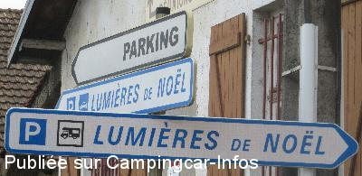
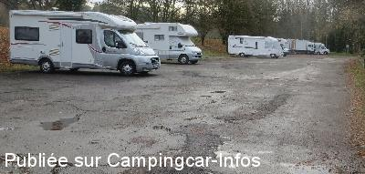
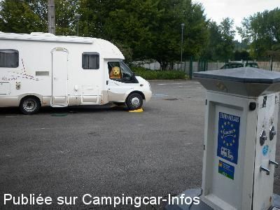
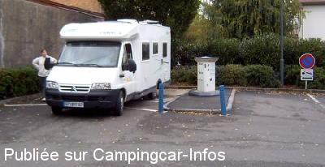
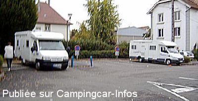

ASN = Aire de services avec stationnement nuit possible de :
MONTBÉLIARD
(N° 534)
Accès/adresse :
Rue du Champ de Foire
Parking du Champ de Foire
25200 MONTBÉLIARD
Parking du Champ de Foire
25200 MONTBÉLIARD
Latitude : (Nord) 47.50662° Décimaux ou 47° 30′ 23′′
Longitude : (Est) 6.7915° Décimaux ou 6° 47′ 29′′
Tarif : 2015
Stationnement gratuit
Eau ou 1 h d'électricité : 1,60 €
Pour les jetons, un distributeur se trouve à 10 mètres
Type de borne : EURO-RELAIS
Services :


A proximité de la rivière
Marché de Noël
Autres informations :
3 emplacements
Stationnement limité 48 h
Tél mairie : +33(0)381 992 200
http://www.montbeliard.com

Le 29/11/2015 par oso

Le 29/11/2015 par oso

Le 09/10/2014 par CLIFORD 33

Le 11/10/2004 par Barbouse

Le 11/10/2004 par Barbouse
de
oso
le 29/11/2015 :
le parking rue du mont bar prolongée est ouvert au CC, suivre les panneaux parking des lumières CC a 600 m de l'aire
le parking rue du mont bar prolongée est ouvert au CC, suivre les panneaux parking des lumières CC a 600 m de l'aire
de
rpp10
le 23/07/2015 :
Par manque de place on peux se garer sur le parking près du canal
Par manque de place on peux se garer sur le parking près du canal
de
ibe
le 20/12/2014 :
passage le 18/12. parking complet, possibilité de se garer sur le parking au bord de la rivière qui est plus agréable. Aire fonctionnelle même si l'accès est malaisé à cause des voitures garée en face
passage le 18/12. parking complet, possibilité de se garer sur le parking au bord de la rivière qui est plus agréable. Aire fonctionnelle même si l'accès est malaisé à cause des voitures garée en face
de
CLIFORD 33 LE 25/04/2014
le 26/08/2014 :
Passage le 11/08/2014 agreable stationnement avec super ballade en villes bravo MONTBELIARD BRIGITTE&JOEL
Passage le 11/08/2014 agreable stationnement avec super ballade en villes bravo MONTBELIARD BRIGITTE&JOEL
de
lolonico
le 07/09/2013 :
§ Aire d'arrêt toute simple à côté de la salle des fêtes et d'un grand parking. Nuit très calme mais attention aux places, elles sont en pentes, donc bien régler le C.C.. Aire de service jouxtant les places avec l'électricité ou l'eau à 1€60. Pour les jetons, un distributeur se trouve à 10M. A 100M du canal.
§ Aire d'arrêt toute simple à côté de la salle des fêtes et d'un grand parking. Nuit très calme mais attention aux places, elles sont en pentes, donc bien régler le C.C.. Aire de service jouxtant les places avec l'électricité ou l'eau à 1€60. Pour les jetons, un distributeur se trouve à 10M. A 100M du canal.
de
michelene
le 19/08/2013 :
Grand parking à coté effectivement ; assez fréquenté par les voitures. La commune de Montbéliard innove en donnant un accès WI FI d'une heure par jour. (en s'inscrivant sur la page d'accueil avec indication de son numéro de téléphone portable.
Merci pour cette initiative en espérant qu'elle fasse des petits dans d'autres villes.
Grand parking à coté effectivement ; assez fréquenté par les voitures. La commune de Montbéliard innove en donnant un accès WI FI d'une heure par jour. (en s'inscrivant sur la page d'accueil avec indication de son numéro de téléphone portable.
Merci pour cette initiative en espérant qu'elle fasse des petits dans d'autres villes.
de
Jean-Philippe Urvoy
le 23/06/2012 :
Plusieurs arrêts sur cette aire très pratique car proche du centre ville. Néanmoins calme. Donnée pour 4 emplacements. En fait seulement trois (ou alors très serrés) mais très vaste parking juste à côté. Des CC y passent la nuit semble-t-il sans difficultés.
Une promenade à pied le long du Doubs s'impose. Calme et sérénité.
Plusieurs arrêts sur cette aire très pratique car proche du centre ville. Néanmoins calme. Donnée pour 4 emplacements. En fait seulement trois (ou alors très serrés) mais très vaste parking juste à côté. Des CC y passent la nuit semble-t-il sans difficultés.
Une promenade à pied le long du Doubs s'impose. Calme et sérénité.
de
loulou38
le 11/05/2011 :
Nous avons passé la nuit du 24 au 25/04/2011 sur ce parking avec 6 à 7 places et la possibilité de stationner sur grand parking à proximité. Il y a un distributeur de jetons à pièces sur le mur du grand batiment à coté de l'aire. La nuit a été calme. Besoin de cales.
Nous avons passé la nuit du 24 au 25/04/2011 sur ce parking avec 6 à 7 places et la possibilité de stationner sur grand parking à proximité. Il y a un distributeur de jetons à pièces sur le mur du grand batiment à coté de l'aire. La nuit a été calme. Besoin de cales.
de
mariata
le 06/02/2011 :
Décembre 2010
aire placée au fond du parking du champ de foire très bien indiquée et à 5 mn du centre ville,jeton en vente à la borne,vidande et remplissage. Aire tranquille et idéale pour marché de noel qui est magnifique et visite de la ville
Décembre 2010
aire placée au fond du parking du champ de foire très bien indiquée et à 5 mn du centre ville,jeton en vente à la borne,vidande et remplissage. Aire tranquille et idéale pour marché de noel qui est magnifique et visite de la ville
de
seb
le 31/10/2010 :
Nous y sommes passer ce dimanche, impossible de faire le plein d'eau car les jetons ne sont pas vendus le dimanche. L'aire est située à coté d'une cité, déjà vu mieux.
Nous y sommes passer ce dimanche, impossible de faire le plein d'eau car les jetons ne sont pas vendus le dimanche. L'aire est située à coté d'une cité, déjà vu mieux.
de
Karl Heinz Huber
le 11/02/2008 :
Wir waren Anfang Februar 2008 für zwei Übernachtungen auf dem Stellplatz. Trotz der Lage bei einem Großparkplatz ist er sehr ruhig. Es sind alle Einrichtungen in der notwendigen Qualität vorhanden. In ca. 10 Minuten ist man im Zentrum von Montbéliard. Leider ist der Platz sehr klein. In der Reisesaison dürfte ein großes Gedränge sein, zumal der Platz kostenlos ist. Nachts ist der nebenan liegende Großparkplatz nur schwach belegt, so daß es vermutlich auch kein Problem sein sollte, dort die Nacht zu verbringen.
Wir waren Anfang Februar 2008 für zwei Übernachtungen auf dem Stellplatz. Trotz der Lage bei einem Großparkplatz ist er sehr ruhig. Es sind alle Einrichtungen in der notwendigen Qualität vorhanden. In ca. 10 Minuten ist man im Zentrum von Montbéliard. Leider ist der Platz sehr klein. In der Reisesaison dürfte ein großes Gedränge sein, zumal der Platz kostenlos ist. Nachts ist der nebenan liegende Großparkplatz nur schwach belegt, so daß es vermutlich auch kein Problem sein sollte, dort die Nacht zu verbringen.
de
Bablot Pierre
le 10/05/2006 :
Nous y avons stationnée une soirée et la nuit fin Aout 2005. Endroit calme, mais en pente, nécessité de caler, avantage proximité du centre ville, mais très calme.
Nous y avons stationnée une soirée et la nuit fin Aout 2005. Endroit calme, mais en pente, nécessité de caler, avantage proximité du centre ville, mais très calme.